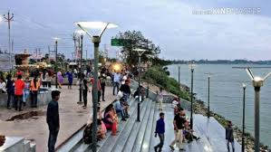
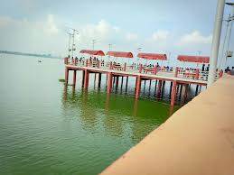

Ramgarh Tal is a lake located in Gorakhpur, Uttar Pradesh, India. In 1970, at its largest size, the lake covered an area of 723 hectares (1,790 acres) with a circumference of 18 kilometres (11 mi). Today, it covers about 678 hectares (1,680 acres).[1]
According to historian and author Rajbali Pandey, Gorakhpur was called Ramgram in the sixth century B.C. It was in Ramgram where the Kolian Republic was established. During this period, the Rapti River passed through the site of the present-day Ramgarh Tal. However, the direction of the Rapti River was later changed, and Ramgarh Tal came into existence from its remains.[2] The lake was under the possession of the prominent zamindar family of Rai Kamlapati Ray in Gorakhpur. Following the suppression of zamindari, it was taken over by the Government of India, although some portion of the Ramgarh Tal is still under the Rai family's possession today. It is believed that there was a village named Ramgarh that collapsed due to a disaster, creating a big hole that eventually got filled with water.[3]